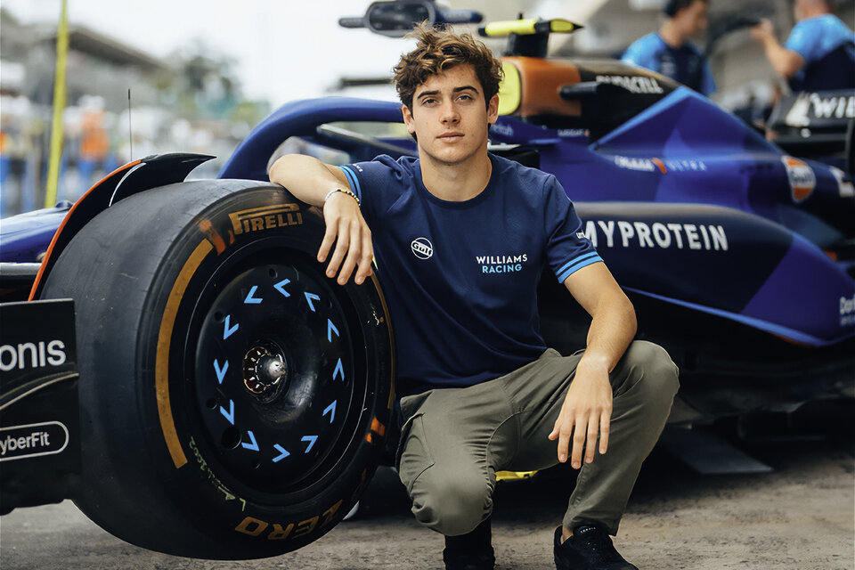
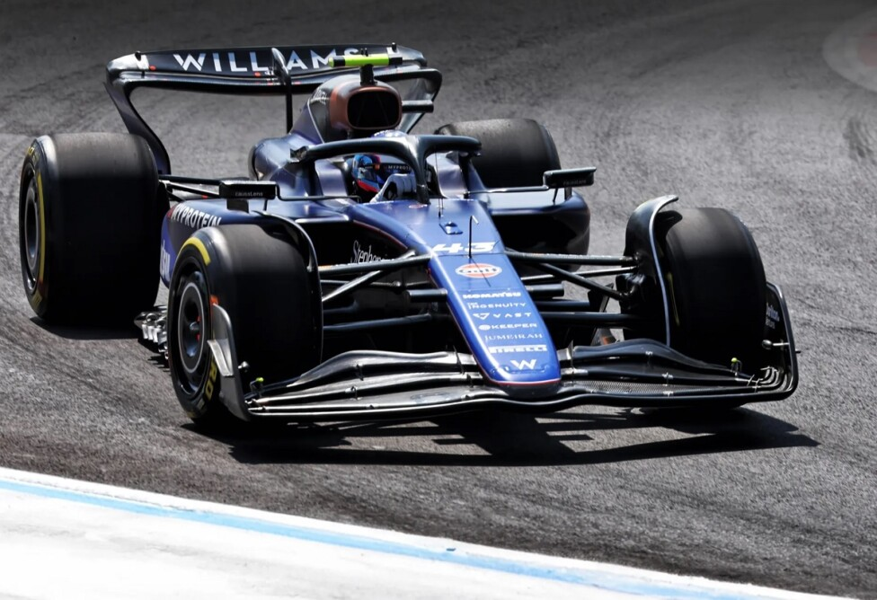

Gran Premio de México en Ciudad de México: Se hara este fin de semana en el Autódromo Hermanos Rodríguez, que será anfitrión de la 20ª fecha del calendario 2024 de la F1.
Gran Premio de San Pablo en Interlagos: Se viene el tan esperado fin de semana en Brasil, San Pablo. Cobijará también la carrera principal y la anteúltima Sprint del año (1 al 3 de noviembre). Allí se espera un aluvión de argentinos en la ciudad paulista para seguir al piloto argentino.
Gran Premio de Las Vegas en Nevada: La Fórmula 1, despues de Brasil, volverá a la acción a fines de noviembre (21 al 23) a Estados Unidos, donde otra vez competirá en un trazado callejero: será en Las Vegas Strip Circuit de Nevada.
Gran Premio de Qatar en Lusail: El cierre de la temporada se desarrollará primero con una doble competencia , que tendrá la última Sprint del año en el Lusail International Circuit, donde Franco será protagonista de una carrera en la misma ciudad donde la selección argentina de fútbol consiguió el título en el Mundial de 2022.